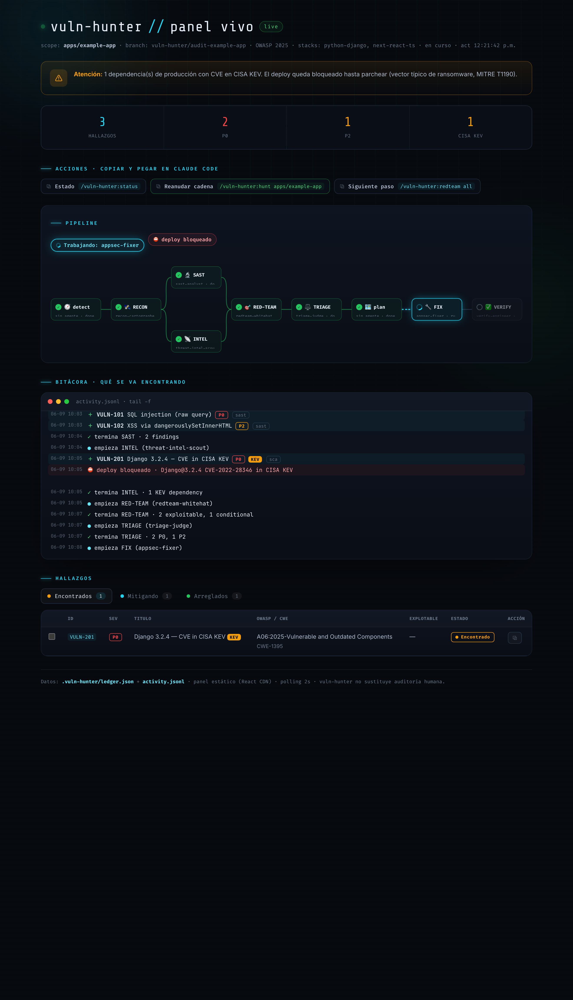
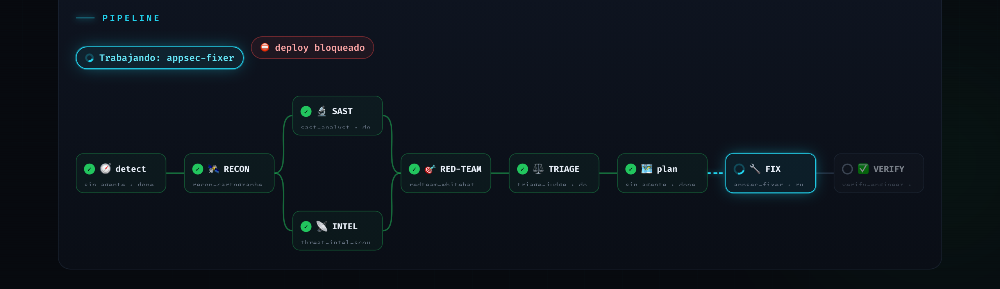

Un escuadrón de 7 agentes de seguridad para Claude Code que detecta, vigila amenazas, tria, planifica, arregla, parchea y verifica vulnerabilidades en tu repo o monorepo — sin teatro de seguridad.
Cada agente lee y enriquece el mismo ledger (.vuln-hunter/ledger.json). No se pasan prosa: hablan JSON. Lanza todo con /vuln-hunter:hunt o ejecuta cada etapa por separado.
Cada subagente está modelado como un especialista de seguridad con su propia metodología. SAST y SCA no se solapan: uno mira tu código, el otro tus dependencias.
recon-cartographerMapea la superficie de ataque: entradas, sinks, confianza y rutas. Construye el contexto inicial del ledger.
sast-analystSAST sobre tu código (no dependencias). Taint/data-flow, normaliza a SARIF y mapea a OWASP.
threat-intel-scoutSCA: cruza tus deps de producción con fuentes oficiales. Único dueño del SCA y del gate anti-ransomware.
redteam-whitehatConfirma explotabilidad con PoC conceptual. Prohibido malware/exploits — lo refuerzan hooks deterministas.
triage-judgePrioriza lo confirmado. Filtra confianza <8 a revisión humana. KEV es override de prioridad.
appsec-fixerFix de causa raíz en branch vuln-hunter/*. Nunca commitea: espera aprobación humana del diff.
verify-engineerRe-escaneo + tests. Si no hay tests que cubran la ruta, declara verificación PARCIAL — no finge.
ledger.jsonEl pegamento: todos los agentes leen, enriquecen su sub-objeto y reescriben. Unifica severidad, dedup y el informe final.
Frontend estático (React por CDN, sin build) que sirves con python3 -m http.server y hace polling del ledger cada 2s. Mira qué agente trabaja y qué se va encontrando, en tiempo real.


Grafo con fork paralelo; el nodo activo gira. Hover sobre cada agente para ver qué hace.
Timeline estilo terminal de lo que se va encontrando, con severidad y KEV resaltados.
Pestañas Encontrados · Mitigando · Arreglados; cada hallazgo se mueve al arreglarse.
Copia el comando de Claude Code para atacar uno o varios hallazgos, ver estado o reanudar.
Levántalo con /vuln-hunter:panel y déjalo abierto mientras corre la auditoría.
Cada comando termina recomendando el siguiente paso. /vuln-hunter:status muestra un dashboard determinista del ledger en cualquier momento.
/vuln-hunter:hunt/vuln-hunter:detect/vuln-hunter:scan/vuln-hunter:watch --gate/vuln-hunter:redteam/vuln-hunter:triage/vuln-hunter:plan/vuln-hunter:fixvuln-hunter/*. No commitea./vuln-hunter:patch/vuln-hunter:verify/vuln-hunter:report/vuln-hunter:status/vuln-hunter:panel/vuln-hunter:resume/vuln-hunter:rescanLas salvaguardas son hooks deterministas, no solo prompts. La explotabilidad se confirma. Nada se cierra sin evidencia.
Un CVE en CISA KEV o con EPSS alto en producción escribe deploy-blocked y detiene el deploy. Cierra el Initial Access (ATT&CK T1190).
Estado único en .vuln-hunter/ledger.json con schema versionado. Severidad, dedup e informe unificados — cero prosa entre agentes.
El patcher commitea solo tras aprobar el diff exacto (approve-diff.py). Si el código cambia, la aprobación caduca. Nunca hay auto-merge.
Solo PoCs conceptuales. disallowedTools + block-exploit-write.py bloquean malware, shellcode y exploits desplegables.
CVSS v4.0/v3.1 + EPSS + KEV. Filtra confianza <8 a revisión humana documentada. KEV es override.
Detecta Python/Django, Next.js/React/TS, Angular y .NET/C#. Scoping por paquete con las herramientas SAST/SCA correctas.
Todo el análisis es sobre el código del propio usuario, en auditoría autorizada, con fin de remediar. No se atacan terceros ni se sale del scope del repo. El threat-intel solo lee fuentes oficiales.
Dentro de Claude Code, añade el marketplace e instala el plugin. Luego detecta tus stacks y lanza la cacería.
Pega estos comandos en la consola de Claude Code.
/plugin marketplace add JoseAFlores777/vuln-hunter /plugin install vuln-hunter@vuln-hunter-marketplace
detect hace el scoping; hunt corre el flujo completo.
/vuln-hunter:detect /vuln-hunter:hunt # dashboard en cualquier momento /vuln-hunter:status
El fixer no commitea solo. Revisa el diff y aprueba ESE hash.
git diff HEAD # revisa python3 scripts/approve-diff.py # aprueba ESE diff (por hash)
⚠ Si editas más, la aprobación caduca: re-aprueba.
Dependencia opcional que mejora la etapa de plan. Instálala solo desde fuentes verificadas.
/plugin marketplace add obra/superpowers-marketplace /plugin install superpowers@superpowers-marketplace
vuln-hunter incluye un laboratorio con 9 vulnerabilidades plantadas y su ground truth. Corre el flujo en --dry-run y cuenta verdaderos positivos, falsos negativos y falsos positivos. Ese número te dice si el plugin sirve.
/vuln-hunter:detect examples/vulnerable-lab /vuln-hunter:hunt examples/vulnerable-lab --dry-run
--dry-runNo sustituye a un auditor humano ni a SAST/DAST dedicados; es un primer pase disciplinado. Licencia MIT.